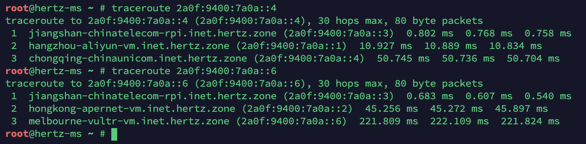

最近没忍住诱惑入了一个外形非常能打的适合家用的企业级服务器 HPE MicroServer Gen10 Plus。
MicroServer 系列产品由前身 HP 企业级产品部门的拆分公司慧与科技（HPE）维护。与上一代 Gen10 相比，Gen10 Plus 回归 Intel 平台，支持 iLO 带外管理，并且大幅降低了体积。
购买
全新 HPE MicroServer Gen10 Plus（8G RAM + 奔腾 G5420）= 4500 CNY
16G 内存条 * 2 = 1060 CNY
志强 2278G CPU = 3350 CNY
iLO Enablement Kit = 249 CNY
HPE Gen10 TPM 2.0 模块 = 550 CNY
优点智能指纹挂锁 = 149 CNY
WD 8T 黑盘 = 1359 CNY / Seagate 8T 银河 = 1389 CNY
WD 8T 黑盘 = 1359 CNY / Seagate 8T 银河 = 1389 CNY（待定）
由于要组 RAID，为了避免所有盘一起坏，所以分品牌分批次购买硬盘，目前只购买了 2 块硬盘，还有 2 块硬盘为预计价格。
价格一共为 4500 + 1060 + 3350 + 249 + 550 + (1359 + 1389) * 2 = 15205 CNY。
以后大概还会增加一张万兆 PCIE 卡。
2022-03-25 购入 TP-Link 万兆电口花费 499 CNY。
硬件
MicroServer Gen10 Plus 包含了 1 根 PCIe 3.0 x16，可以插入单槽半高的 PCIe 扩展设备，比如 PCIe 转 M2 SSD 卡，万兆电/光网卡，甚至是一张显卡。
机箱内还有一根 PCIe x4，然而只是插槽类型一样，实际上只能插入 iLO 扩展卡，其他扩展卡插入后连供电都不正常，更别提使用了。
TPM 插槽位于俯视图右下角，官方还给了一个 TPM Cover，是一个可以插入主板上覆盖并保护 TPM 模块的一次性卡扣，插入后卡在主板上无法取下，为 TPM 模块提供物理安全性保护。
如果你不需要独立 iLO 网口，也可以购买破解版 iLO 扩展卡，价格非常实惠（个位数），原理是诱骗主板 BIOS 已插入 iLO 扩展卡并启用 iLO 远程管理功能。
配置
一定要看官方 User Guide，有关硬盘安装、TPM 安装、iLO 安装等均有详细说明。
与上一代不同，Gen10 Plus 没有第五个 SATA 口，但机箱内有一个 USB 2.0 接口，因此我最终选择 4 盘 Btrfs RAID10 并将 ESP 分区放在 U 盘上。
我使用的配置是将 Luks 配置为加密块设备，将 4 块盘分别加密后加入 Btrfs RAID，开机时自动 TPM 解密硬盘。
YuutaW 有一篇文章介绍了这个过程：传送门
如果你也希望将系统安装在 Btrfs RAID 上，最好不要使用 Debian，Debian 使用的 initramfs-tools 比较落后，并且默认情况下不支持 Btrfs 多设备，这是因为开机时 Debian 的 initramfs 不会执行 btrfs scan，因此无法发现所有 Btrfs 设备，这会导致开机时出现找不到硬盘的问题。
我最终使用 ArchLinux + mkinitcpio，mkinitcpio 生成的 initramfs 可以正常读取所有 Btrfs 设备，然后以 TPM 解密硬盘。
如果你在使用 grub 2.0.6，配置安全启动时可能会出现 "verification requested but nobody cares"，这是因为 grub 2.0.6 存在问题，在我使用的全盘加密配置下，grub 无需再次验证内核签名，因为如果 TPM 模块释放的密钥能解密硬盘，说明这块硬盘未经修改且确实属于我，其他硬盘因无法使用我的 TPM 解密，系统会中断引导过程，因此我直接使用文章中提到的方法关闭了 grub 的安全启动功能。（勘误：系统中断引导过程后仍然可进入 grub rescue mode 并引导至其他硬盘，因此安全启动实际上仍然无法提供任何安全性，在 TPM 自动解密的情景下攻击者可以通过 grub 引导至其自有系统并使用 TPM 直接解密硬盘，我将会晚些切换到 systemd-boot 以解决这个问题。（更新：我已经解决了这个问题，使用 sbupdate 直接将 initramfs 打包进 efi 文件，不再使用 grub 或 systemd-boot 等引导器，主板完成 POST 后直接启动到已签名的内核））直接使用命令关闭 grub 安全启动功能可能会导致安全启动失效（签名链条不完整），请取决于你的配置参考使用或使用其他引导方式。
另外，值得一提的是 Btrfs 的 RAID10 并非标准的 RAID10，Btrfs 的 RAID10 更像是 RAID01，简而言之，其好处是可以充分利用容量不同的数块硬盘，但是在 4 盘情况下只能容许损坏 1 张硬盘，而标准的 RAID10 在 4 盘下损坏第二张盘时数据有 66.7% 的概率无损。
其次，如果你在配置 Btrfs 时，将硬盘从 RAID 池中移除后（btrfs device remove）遇到 super_num_device mismatch with num_device 的问题，可以使用这个程序解决，这是因为硬盘移除后 Btrfs 还是认为自己有原来块数的硬盘，使用工具强行修正后可解决，原因未知。
为了保证跨境连接的稳定性与速率，并考虑到未来大概要出国，我还为此组建了一张全球性的内网：
